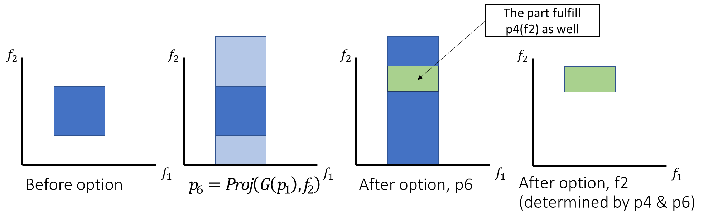

From skills to symbols: learning symoblic representations for abstract high-level planning
George Konidaris et al., JAIR 2018
1. Theory
1.1. Terminology
-
World State- A description of an environment suitable for planning in a standard MDP
- Can be described using state variables or (boolean) symbols
- States of everything in the world (player x, player y, object x, object y, object with player,…)
-
State Variable- A predefined variable representing some component of the world state. Can be continuous or discrete (light_on, hand_switch_x)
-
Action- A functionality that changes the world state (move_hand_x)
- A functionality that changes the world state (move player x)
-
Option- A high-level action that an agent can take that affects the world state (hand_to_switch)
- A high-level action that an agent can take that affects the world state (move to the door)
-
Mask- The set of all state variables which can be changed by a given option
- The set of all state variables which can be changed by a given option (pick up states that changed by a given option.)
-
Initiation set- The set of all possible world states from which the actor could perform a given option
-
The set of all possible world states from which the actor could perform a given option
-
Effect set- The set of all possible world states that the actor could find itself in after performing a given option
- The set of all possible world states that the actor could find itself in after performing a given option
-
Grounding- A classifier that the actor can run at any state to determine if it qualifies for inclusion in a set of world states.(-0.5<light_hand_x<0.5)
- A classifier that the actor can run at any state to determine if it qualifies for inclusion in a set of world states.(-0.5<light_hand_x<0.5)
-
Symbol- A representation of a high level aspect of the world state. Evaluates to True or False. Takes the form of one or more groundings.
- A representation of a high-level aspect of the world state. Evaluates to True or False. Takes the form of one or more groundings.
-
Precondition- A set of symbols that must evaluate to true in order for the option
to be executed. Derived from initiation set - A set of symbols that must evaluate to true in order for the option o to be executed. Derived from initiation set
-
Positive effects- Also referred to as effects+. A set of symbols that will evaluate to true when an option is executed. Derived from effect set
- A set of symbols that will evaluate to true when an option is executed. Derived from effect set
-
Negative effects- Also referred to as effects-. A set of symbols that will evaluate to false when an option is executed. Derived from effect set
- A set of symbols that will evaluate to false when an option is executed. Derived from effect set
1.2. Definition list
-
Def 1: symbol: a set of states that are true
-
Def 2: plan
-
Def 3: a feasible plan:
-
Def 4: plan tuple: a serial of plan that make from A to B
-
Def 5: plan space:?
-
Def 6: precondition of an option, initiation set
-
Def 7: image: from one possible start, execute x, result
-
Def 8: effect: from all possible start, execute x, result
-
Def 9: effect symbol of option o
-
: Ground set. -
: Grounding classifier. A test/classifier -
: Symbol, Def. 1 -
: Plan, Def. 2 -
: a propositions (abstract Boolean state variable) -
: a set of propositions (2.2) -
: Initiation set -
: Precondition, Def. 6 -
: Image, Def. 7. Given 1 set of world state, exe option, get as output. -
: Effect set. Def. 8 -
Def 10: the weak goal condition
-
Def 11: The strong subgoal condition
-
Def 12: A plan graph?
-
Def 13: projection?
-
Def 14: remainder: projection with mask
-
Def 15: the weak abstract subgoal condition
-
Def 16: the strong abstract subgoal condition
-
Step 1: questions: what options
changes s_i?
1.3. Process flow
1.4. Making symbols
- What data is available?
- factors(oi), returns the factors of the given option, (f)
- Effect(oi) returns the effect set of the given option (e)
- For each factor (fi) in the list of factors (f)
- Project out the state variables of that factor fi from e
- Project out the state variables from all of the other factors of this option (f/fi)
- Evaluate if the intersection of the results are equivalent to the effect of the option
- IF SO
- This factor is independent
- Project out the state variables from all of the other factors again, and save the resulting grounding set as a symbol
- Code maintenance: project this factor out of the effect set and save as the effect set, remove this factor from the list of factors of this option
- The effect set and factors of the option do not actually change
- If there are any non independent factors
- Create a symbol for each grounding generated by projecting every combination of factors out of the effect set
1.5. Projection!
- Projection is a way of “flattening” a set space, or making a set of states “permissive” of certain variables
- If I project x out of a set A, the result is the set A made entirely permissive of x
- Initiation and effects sets are examples of what A could be
2. Deterministic world
2.1. Generate a PDDL domain description (deterministic)
2.1.1. Computer factors (What states change together?)
- States -> Factors -> Symbols
- E.g.:
-
Option1: Robot moves side way: (x)
-
Option2: Robot moves forward: (y)
-
Option3: Robot moves backward: (x, y, backup_light=on, warning_sound=on)
-
We have 4 states: s_1(x), s_2(y), s_3(backup_light), s_4(warning_sound)
-
4 states -> 3 factors 𝑓_1={s_1}: Robot x 𝑓_2={s_2}: Robot y 𝑓_3={s_3,s_4}: Robot being annoying
-
Option 4: robot moves in diagonal:
-
Question: Will 𝑓_1 and 𝑓_2 influnce each other (independence)?
-
2.1.2. Generate symbols (What value should be use for classifier?)
- Projection E.g.: Robot moving backward diagonal - s_1(x), s_2(y), s_3(backup_light), s_4(warning_sound) - 𝑓_1={s_1 }, 𝑓_2={s_2 }: non-independent 𝑓_3={s_3,s_4}: independent - 𝐸𝑓𝑓𝑒𝑐𝑡_𝑟 (𝑜_3 ): {〖s′〗_1, 〖𝑠′〗_2 } tells us you only move diagonally - 𝐹_3: You can move to anywhere as long as you have light and sound on - 𝐸𝑓𝑓𝑒𝑐𝑡(𝑜_3 ): fulfill both 𝐸𝑓𝑓𝑒𝑐𝑡_𝑟 (𝑜_3 ) and 𝐹_3 (fulfill each 𝐹_j ) 𝐸𝑓𝑓𝑒𝑐𝑡(𝑜_𝑖 )=𝐸𝑓𝑓𝑒𝑐𝑡_𝑟 (𝑜_𝑖 )∩(∩𝐹_𝑗) - 𝑓_1={s_1 }, 𝑓_2={s_2 }: x, y; non-independent 𝑓_3={s_3,s_4}: (light & sound) independent - Step1: symbol1: 𝑃𝑟𝑜𝑗(𝐸𝑓𝑓(𝑜_3 ),〖{𝑓〗_1,𝑓_2} ): Pose: Anywhere Light & sound: ON - Step2.1: symbol2: 𝑃𝑟𝑜𝑗(𝐸𝑓𝑓_𝑟 (𝑜_3 ),𝑓_1 ): Pose: decide robot y - Step2.2: symbol3: 𝑃𝑟𝑜𝑗(𝐸𝑓𝑓_𝑟 (𝑜_3 ),𝑓_2 ): Pose:decide robot x - The link between x and y is determined by the robot’s own program (internally, low-level. Given x, get y as output)
- States in the factor Vs. non-independent symbols
- Low-level vs. high-level
- States in the same factors always change together. Non-independent symbols change together in some options, but not in other options. (?)
2.1.3. Generate operator descriptors
- Create operators
- On state-level (fulfill == true, 𝑝 is a propositional symbol)
- Let’s start with 𝑝_1, 𝑝_2, and 𝑝_3 (is true)
- After executing option, 𝑝_3, 𝑝_4, 𝑝_5, and 𝑝_6 is true
- 𝑝_6=𝑃𝑟𝑜𝑗(𝐺(𝑝_1 ),𝑓_2)  -Let’s start with 𝑝_1, 𝑝_2, and 𝑝_3 (is true)
- After executing option, 𝑝_3, 𝑝_4, 𝑝_5, and 𝑝_6 is true
- 3 situations:
- Fully overlap: 𝑝_2, and 𝑝_3 VS. 𝑝_3, 𝑝_4, and 𝑝_5 (change)
- Partially overlap: 𝑝_1 VS. 𝑝_6 (change) (𝑝_6=𝑃𝑟𝑜𝑗(𝐺(𝑝_1 ),𝑓_2)) If 𝑝_1 is true, 𝑝_6 is true (but we don’t care) If 𝑝_6 is true, 𝑝_1 is not guaranteed true.
- Let’s start with 𝑝_1, 𝑝_2, and 𝑝_3 (is true)
- After executing option, 𝑝_3, 𝑝_4, 𝑝_5, and 𝑝_6 is true
- 𝑝_3, 𝑝_4, 𝑝_5, and 𝑝_6 is true.
- 𝑝_4 changes 𝑓_2, 𝑝_1 (partially covered by 𝑝_4) is no longer guaranteed true (remove from the list). (𝑝_6 has no effect to 𝑝_1)
- 𝑝_4 and 𝑝_5 change 𝑓_4 and 𝑓_5, 𝑝_2 (fully covered by 𝑝_4 and 𝑝_5) is no longer guaranteed true (remove from the list).
- 3 types of effects (symbol-level):
- A 𝜎 (symbol) becomes true after execute option: add to effect+ For rest of the 𝜎s (A 𝜎 (symbol) becomes false after execute option):
- Fully covered: effect-
- Partially covered: conditionalEffect-
- Preconditions: Every 𝜎 in effects (+, -, conditional-). For factors in effects, there should have no overlap. (?)
2.1.4. Searching algorithm
- Fast-Forward planner (v2.3 by Hoffmann & Nebel, 2001)
- Breadth-first planner, uses the grounding classifiers at runtime, performing the corresponding logical operations as necessary. This corresponds to semi-symbolic planning using the grounding sets themselves, rather than an abstract model computed using them.(3.3.1, p240)
2.1.5. Creating PDDL Domain
- Create dictionaries for preconditions, effects + and -
- P is the set of all symbols, 𝝈 represents a given symbol For each option
- 26: For each 𝝈 in P
- Does 𝝈 refer to the effect of the option?
- IF SO add 𝝈 to effects+
- 29: Pnr is set to all remaining symbols
- 30: For each 𝝈 in Pnr
- Is the grounding of 𝝈 in the initiation set of oi?
- can this symbol be true when the action is performed
- Are the factors of 𝝈 a subset of of the factors of oi?
- Does performing this option change the values of all of the factors in 𝝈?
- IF SO add 𝝈 to effects-
- Is the grounding of 𝝈 in the initiation set of oi?
- 31: Skipping specific implementation for conditional effects
- See fig 10, if p1is true before the option and P4,5 become true
- P1 becomes false
- Whatever symbol represented the state of f1 in p1 becomes true
- Note: this code in the cont. Playroom is depreciated/not correct
- 33: For all sets of symbols Pc
- Are the factors of the init set of o a subset of the factors of the symbols in Pc?
- Are the groundings of the symbols in Pc a subset of the groundings of the init set?
- Make sure none of the factors of any 𝝈 in Pc overlap with each other?
- IF SO add Pc to the set of preconditions (union operation)
- All done!!!